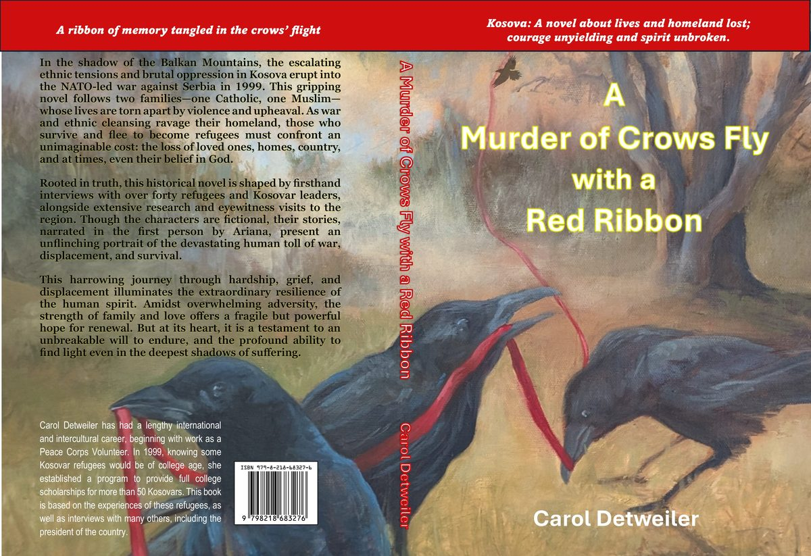

A Murder of Crows Fly with a Red Ribbon
Kosova: A novel about lives and homeland lost; courage unyielding and spirit unbroken.

The Synopsis
In the shadow of the Balkan Mountains, the escalating ethnic tensions and brutal oppression in Kosova erupt into the NATO-led war against Serbia in 1999. This gripping novel follows two families—one Catholic, one Muslim—whose lives are torn apart by violence and upheaval.
As war and ethnic cleansing ravage their homeland, those who survive and flee to become refugees must confront an unimaginable cost: the loss of loved ones, homes, country, and at times, even their belief in God.
Rooted in truth, this historical novel is shaped by firsthand interviews with over forty refugees and Kosovar leaders, alongside extensive research and eyewitness visits to the region. Though the characters are fictional, their stories—narrated in the first person by Ariana—present an unflinching portrait of the devastating human toll of war, displacement, and survival.
This harrowing journey through hardship, grief, and displacement illuminates the extraordinary resilience of the human spirit. Amidst overwhelming adversity, the strength of family and love offers a fragile but powerful hope for renewal. But at its heart, it is a testament to an unbreakable will to endure, and the profound ability to find light even in the deepest shadows of suffering.
A Note on the Title
The word "Kosovo" comes from a Slavic phrase meaning "field of blackbirds," referring to the historic 1389 battle site where empires collided. A "murder of crows"—the ancient collective term for a flock—has long symbolized battlefields and their aftermath.
In this novel, the crows become a haunting image for a land that witnessed devastation. But the red ribbon carried by Ariana Hoxha becomes something else entirely: a thread of memory, of family, of blood and hope woven together. It is the story of a people who kept moving forward anyway.